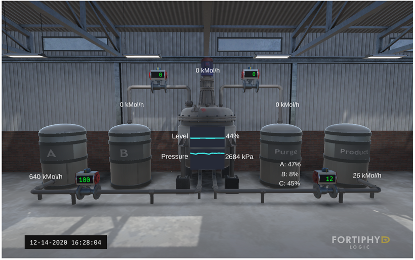

An ICS lab with GRFICSv2¶

GRFICSv2 (Graphical Realism Framework for Industrial Control Simulations) is an Industrial Control Systems (ICS) simulator developed by Fortiphyd and released in 2020. Unlike VirtuaPlant, GRFICSv2 integrates an HMI, a PLC and a simulation environment. The simulation emulates a chemical plant, which is controlled and monitored by simulated remote I/O devices through a simple JSON API.

Officially Released Components¶
The following components are distributed as OVA (Open Virtual Appliance) files, compatible with VirtualBox:
- Simulation: the ChemicalPlant VM runs a detailed simulation of the chemical process. The simulated remote I/O devices interact with the system through a JSON API and are controlled by the PLC VM using the Modbus protocol.
- PLC: the plc_2 VM is a customized version of OpenPLC (GitHub). It relies on an outdated version of the libmodbus library, which contains known buffer overflow vulnerabilities.
- HMI: the ScadaBR VM hosts an operator interface (HMI) built with ScadaBR, an open-source SCADA software. The HMI lets operators monitor the process data collected by the PLC and send control commands.
- pfSense firewall/router: the pfSense VM works as a firewall and router, managing network security and routing between the DMZ and the ICS network.
- Engineering Workstation (EWS): the Ubuntu 16.04 VM acts as the engineering workstation, with the tools to program OpenPLC, and sits in the ICS network.
Network Configuration¶
GRFICSv2 requires two VirtualBox networks:
| Adapter | Name | Type | Gateway Address |
|---|---|---|---|
| vboxnet0 | DMZ | VirtualBox Host-Only Ethernet Adapter | 192.168.90.100/24 |
| vboxnet1 | ICS | VirtualBox Host-Only Ethernet Adapter | 192.168.95.1/24 |
Each of the five VMs must be assigned to these networks as follows:
| VM | Adapter | Network | Address | Credentials |
|---|---|---|---|---|
| Simulation | 2 | ICS | 192.168.95.10 | simulation/Fortiphyd |
| PLC | 1 | ICS | 192.168.95.2 | user/password |
| HMI | 1 | DMZ | 192.168.90.5 | scadabr/scadabr admin/admin |
| EWS | 1 | ICS | 192.168.95.5 | workstation/password |
| FW | 1 | DMZ | 192.168.90.100 | admin/pfsense |
| FW | 2 | ICS | 192.168.95.1 | admin/pfsense |
Limitations and Enhancements¶
The main limitation of GRFICSv2 is its dependency on VirtualBox, which restricts the integration of third-party appliances and services. To make it more flexible and easier to deploy, I converted GRFICSv2 into a Docker-based system, which simplifies the installation and makes it more compatible with modern environments.
The Docker implementation is not flawless yet, but GRFICSv2 remains a valuable tool to gain hands-on experience with PLC, HMI and engineering workstation environments.
The Dockerfiles for this setup are available in my GitHub repository. They are the foundation for building an ICS/OT security lab.